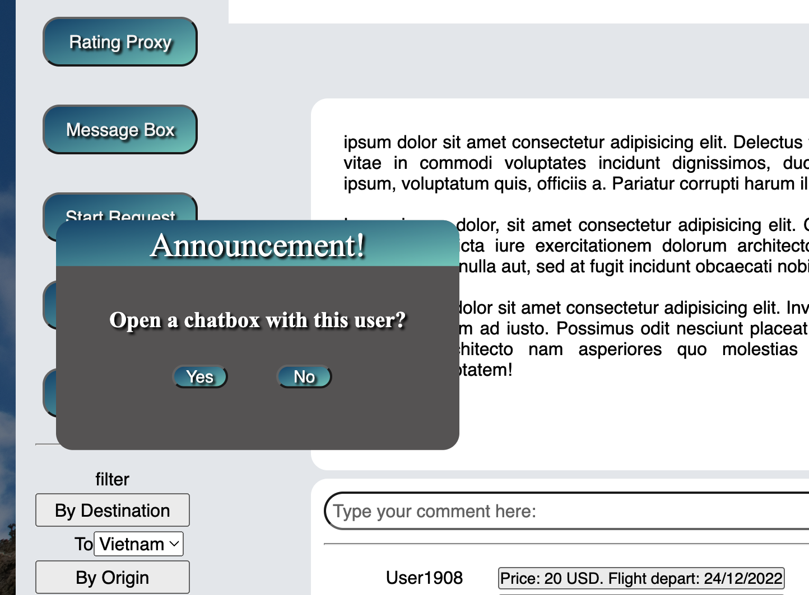
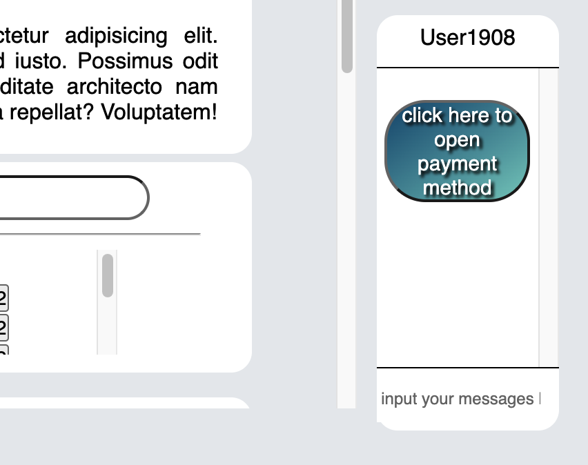

Mr. Trung is a commerce graduate from the University of Melbourne in Australia. It was with his business-oriented mind he proposed the idea for the project. His hobbies are antique item collection, watching anime, and photography. He is currently holding off on his main pursuit in data science in favor of website development as he thinks it is the fastest way to employment
Project Manager - Chief Front-end Developer - Chief Content Editor: Since Mr. Trung Luong has prior experience with CSS/HTML5, he was responsible for the development of basic UI/UX of the website. Moreover, as the champion of the project, he also acted as a project manager. He was the one who came up with the design of each website’s components, as well as the specification of the database. When the other members finished their assigned tasks and published their finished works on Github, it was Mr. Trung who went over their works to see whether there was anything that needed to be redone or to be added. He followed the progress of the other members' closely and was responsible for the recording of the project's progress in the report. For instance, he was responsible for most of the parts in the detailed description section. Lastly, since he has more experience in academic writing than the other 2 members, he held the heavy responsibility of editing out unnecessary content, as well as rewriting any non-professional sounding part.
Nguyen Tuan Duong
Similar to Mr. Trung, he also has the same background as an Australian university graduate in Business. Therefore, he is very interested in the idea of Mr.Trung. This is one of those models he himself has seen very little of. He is interested in gym and computer science exploration. He aspires to become an analyst in the data industry which is still very new in the Vietnamese market. I hope to bring many achievements to the Vietnamese market in this field.
Database Manager - Assistant Front-end Developer - Market Analyst: With prior experience in database design, Mr. Tuan Duong was the person who designed the database of the project. Moreover, he also helped Mr.Trung to design some components of the website. Specifically, it was him who provided Mr.Trung with the Javascript code to make the rating form. Beside that, Mr. Duong was responsible for analyzing relevant factors in the external environment, such as competitor analysis, postage industry analysis. With regards to the report, he was responsible for the overview, skills and careers, and risks section.
Phan Tran Minh Toan
Mr. Toan is a first year second semester IT student at Rmit, he also had completed a course in Logistic in Ho Chi Minh National University. He offers his experience in business and a little bit in database and coding that he has picked up in his previous semester. His main objectives for this project are having a better grasp of website development and working with different programming languages. With the skills learned from this project, Mr.Toan hopes it would aid him in his data analyst career path.
Chief Public Relation Editor - Junior Assistant: Mr.Toan was the person who designed the powerpoint for the whole group. Beside that, we also provided some small assistances to the other 2 members during product execution phase. Lastly, he holds 20% of the final report, responsible for the Project Outcome and the Technology section.
Career Plan
The three members of the group all share a common background - business. Specifically, as mentioned above, Mr. Trung and Mr. Duong are graduates from business-related degrees in Australia. Meanwhile, before enrolling in RMIT’s Bachelor of Information System, Mr. Toan used to study for one year in the field of logistics. This similarity might explain why we all share the same career plan - pursuing data science and data analytics. However, Mr. Trung seems to have deviated a little bit in his original plan and is temporarily focusing on website development.
Group Process and Reflection
When it comes to the execution phase, after a week spent on the interview, we then spent another week on planning out the details of our database and the webpage interface. It was during this week that we decided to skip over the aesthetic part of the website and focus instead on how different elements of the website interact with one another. Given how all of the team members are first-year students, we dedicated 2 weeks in our schedule for the members to learn and familiarize themselves with the new technology. The weeks after Christmas was when everyone came together and presented their work. Mr Trung (The project manager) reviewed the results and carried out the final modifications needed to make the final product look acceptable.
There were several factors undermining the performance of this group project. Firstly, there were conflicts in time and interests between members. Specifically, Mr. Toan and Mr. Duong were occupied with assignments from other subjects, which might have limited the time they spend on the tasks (Even though they were able to deliver what they were assigned). On the other hand, while Mr.Trung was able to spend quite a lot of time on this project, his focus was solely on the practical aspect of the project, which was developing the prototype. According to him, he placed more importance on improving his web development skill than on the grade he would receive. Moreover, we only remembered about Github until some of the web components had been completed. As a result, not much auditing occurred and not many changes were committed there as we only uploaded the completed file to the platform. Nevertheless, by reading the history of each file and the audit trail, you would still be able to see which member contributed to which part. As a result of this poor collaboration, not much attention was devoted to the administrative aspects of the project, which were the report and the presentation, which in turn led to us not being able to complete our presentation on time, and the quality of our report is not very well polished. Moreover, there was also a time when a member forgot to read the website specification, leading to Mr. Trung having to re-develop the component assigned to that person.
On the bright side, we were able to learn knowledge outside the course material. Specifically, PHP, Javascript, and CSS will not be taught until we study the Web Development course. Hence, this project gives us quite a strong foundation for our future study. Moreover, the satisfaction derived from successfully developing a barely working web interface gave us the much needed drive to continue our study. As mentioned before, time is our worst enemy for this project as each member has their own commitments outside of the project. However, they still successfully finished their assigned task.
Project Tools
The audit trail does not very well reflect progress on the final report website as we wrote the source codes from a file outside of our Github' repository (out of habit) and then posted codes directly into a file created in the repository. We elected to have the person with the most proficience in HTML (Mr.Trung) to build the web page for our final report. This is reflected in the audit trail, which show Mr.Trung was the one who created, wrote and edit the source codes of the
Each of us has a hobby of shopping and collecting our own items. It is not simply an item, but it is also considered a spiritual gift. Looking at those items every day will make our emotions better. Not only that, it also motivates us to work more enthusiastically to have the opportunity to collect more of that item. Vietnam has been open to embargo and international integration for the past 25 years. With an amazing growth rate, obviously this is a lucrative market for foreign companies such as jewelry, fashion, perfume, and so on. However, because of international integration in such a short period of time, many types of products or foreign companies have not yet set foot in the Vietnamese market.
How long has it been since you couldn't find a desired product, item or collectible in the domestic market? If your collectible is not popular with the masses, it becomes more and more elusive in the domestic market. We have many friends who are passionate about collecting rare items, but the problem for them is that the item is not easy to find and it is only available in a few countries, where Vietnam is not on the list can be shipped to. Therefore, the only way to own the item is to engage in international e-commerce. However, international shipping has also not always been a good experience for everyone involved in an international business transactions. Delays in shipping due to many factors such as weather or complicated custom procedures, long wait times and the possibility of mishandling packages by couriers complicate an otherwise simple process. The paragraph below will detail the current situation in the world shipping network.
The conflict that broke out between Russia and Ukraine in February has led to rampant inflation across the globe. Even before the conflict disrupted global food and energy supplies, inflation projections were already quite high as supply chains were overstretched by additional demand after the end of the major blockades due to Covid-19. In 2022, shipping fleets around the world have been struggling to meet the burgeoning post-covid e-commerce demands, with major ports around the world to encounter congestions and the slowdown of traffic flow. In fact, shipping capacity has dropped by 10-15% (Hand 2022). Retail empires like Amazon find it increasingly difficult to deliver orders to customers (Hand, 2022). Mail theft incidence has risen by 400% in the US alone since 2019, according to the USPS (The Crime Report 2022). Lastly, between 2021 and 2022, UK’s Royal Mail saw an increase in customer complaints by 50% (Ungoed-Thomas 2022).
To solve these problems, we have found a way to revolutionize international shipping, which comes in the form of a social platform. The website will primarily target 2 types of users. The first type of users are commissioners - people who would like to buy items from or send items overseas. The second type of users are proxies - people planning to travel overseas who offer to carry the items with them for a small fee. The website will act as a social platform connecting commissioners and proxies together. When a proxy and a commissioner have reached a price agreement, we will collect the payment from the latter. The former will be paid when we have received item reception confirmation from the commissioner. The website draws inspiration from the tech-led gig economy trend pioneered by tech giants such as Uber, Grab, etc. Using information technology, we are able to connect service suppliers with people who demand such services.
Currently in Vietnam and some countries, this form of service doesn’t exist, and our primary competitors would be the national postage system, and companies that offer logistics solutions to end-users in specific shipping routes. What differentiates our service from theirs is that we offer the same value (faster delivery time, better item handling) at lower price points. Hence, much like how Uber disrupted the traditional cab industry, our service could be considered a revolution to the traditional international logistics industry
Project Description
Plan
Our project development closely followed the design thinking framework. Specifically, as stipulated by the framework, every effective product development process starts with the understanding of customers’ needs and demand. Hence, our project started off with primary research into published articles to see if there is a need for our service. As expected, there has been an increase in customers’ discontentment with the international postal system.
Moreover, we also conducted research into the end-user international logistic market to find out what is the most popular shipping destination from Vietnam. We found that most couriers in this market offered logistics between Vietnam, the UK, the US, and Japan. For instance, the company HAKAGO operates shipping routes between Vietnam, UK, and the US. The company T&D Express Cargo operates shipping routes between Vietnam, UK, US, Japan, and the EU. This result helped validate our initial decision to target users in Vietnam, the US, the UK, and Japan.
Originally, the primary research was to be followed by a focus group interview, and a quantitative research phase where a survey was to be administered to a larger sample group for more accurate information. However, since our team was severely understaffed, we collectively decided to skip over both of these phases. As a result, we might have been working on inaccurate information. This, however, makes prototype testing even more necessary later on.
Lastly, there has also been a change to our original project scope. Upon further discussion, we all agreed that adding a comment section under each request would help prevent users’ chat box from getting clustered. Moreover, making proposed prices visible to every party would keep prices in check, and unreasonable price proposals are less likely. So that they would not account for too much storage in the database, every comment must follow a concise format that we all agreed upon, which is “Price: ………….. USD. Flight Depart on ……………”. Beside the comment section, we have also added the custom regulation counseling page into our website. This is so that our users would not get into legal troubles at the destination country.
Aims
The ultimate goal of this project is to make an online platform that facilitates low-cost, risk-free, and safe movement of goods and items across borders without the need for international postage. The aim of the first 12 weeks of the project is to build a minimum viable prototype that could be tested for users’ experience with the interface. As a result, for the first 12 weeks, we will be focusing solely on developing the database, the front-end structure of the website, which includes the website’s sections, buttons, and basic interaction between different components (How an action of the user on one component affects the others). The visual characteristics of the website will not be the main focus of this time frame.
Scope and Progress
The scope of this project is composed of three main components: the user interface of the webpage, the database, and the visibility algorithm. While development has yet to start for the algorithm, the completion status for the other 2 components will be detailed below
User Interface
The table below will detail the components of our web interface and their completion status:
Functionality
Completition Status
Note
Registration Form
Completed
Log-in Form
Completed
Request From
Completed
Customer Regulation Counselling
Not Completed
Main Page
Completed
Basic structure of the main page has been completed. All that is left is to add more visual appeal to it.
Translation Function
Partly Completed
We have not developed the real-time translation functionality that would generate translated versions of users' comments and messages the moment they enter our database. We have, however, added the translations for buttons and prompts.
Account Management
Not Completed
Rating Form
Completed
Chat Box
Partially Completed
The chat box is currently not operable
Table 1: UI/UX elements and completion status
The main page is the main component of our user interface. As of now, we have successfully built 3 versions, each of which is in a different language (Vietnamese, English, and Japanese). Users could switch between the 3 versions by choosing one of the flags at the top. From the main page, users are directed to the request form when they click the “Request Form” button. Submitting the request form will create a new record in our database, which would then be pulled back to the user interface for display.
The comment section under each platform is where users could post or view others' comments. By clicking on a comment, a message box will pop up and ask if the user would like to open a chat box with the owner of the comment. Choosing “yes” will prompt a chat box to appear. Once both parties have reached a settlement, a button will appear in the chat box. Clicking on this will display a pop-up box that asks for the agreed upon price. Once it has been found that the prices entered by both parties are the same, the option to be directed to the payment page will be enabled for the commissioner.

Figure 2: A prompt will appear when a comment is clicked

Figure 3: Clicking Yes will open the chat box with the owner of the comment
In the main page, there are buttons that redirect users to the account management page, custom regulation counseling page, and setting page. However, as of now, the construction for these 3 pages have yet to begin.
As seen in the figure above, there are 6 tables in our database. The main table to which the other tables connect to is the Customer info table. As of now, we have successfully developed the back-end code that inserts password, username, and personal info into the table when new users submit the registration form.
Beside housing users' personal information, this table also contains critical data for the visibility algorithm - rating data. Through an automation trigger, the rating information will automatically be updated when the proxy is rated by the commissioner. While we have successfully built a rating form, We sadly have not built the backend code to connect it with the rating table. Moreover, due to time constraint and lack of experience with Javascript, our current rating form is quite rudimentary.
When a commissioner opens a request by filling in our request form, a new record is automatically added into the Request_list table. Upon its creation, a record in this table will contain the id of the commissioner, the origin country of the item in question, the destination of the request, and the “uncompleted” status by default. The backend code that connects this table to the request form has not, however, been created. As mentioned in the interface section, beneath each request form will be the comment section, where users could create their own or view other people's comments. The details of each comment will be recorded in the comment table. Clicking on a comment will initiate a chat box, for which there will also be a dedicated table. When two parties have reached a settlement, and payment has come through from the commissioner, a record in the transaction table will be created. Once the commissioner has confirmed that their items have been received, the transaction status in the transaction table will change to completed. This will also automatically update the request status in the request table to “completed”. Again, due to time constraint, and the lack of manpower, we have yet to develop the backend code to connect the interface with any of the tables above.
The final factor considered by the visibility algorithm is the number of requests successfully fulfilled. This will be stored in the customer information table. This will automatically be updated for each user every time the request status is updated to “completed”. The following table details the connection between the database and front-end components:
Table Name
UI/UX Component
Connection Status
Customer_info
Registration Form
Connection Established
Log-in Form
Connection Not Established
Rating
Rating Form
Connection Not established
Comment
Comment Section
Connectiong Not Established
Request List
Request Form
Connection Not Established
Chat
Chat Box
Connection Not Established
Table 2: Database tables and Their Respective UI/UX components
Technology
Up until now, the primary tools we have been using have beenCSS, HTML5, Javascript, Mysql, and some minor PHP. While HTML5 acted as the frame, we used CSS to add visual appeals to our web pages. Javascript was used to facilitate interaction between users and different components within the pages. Lastly, PHP helped connect the user interface and the database, which was built by using mySQL. Github and Google Doc are the two primary platforms where our collaboration has been taking place.
For the future, we have decided to choose to host our website on the Cloud. The rationale underlying this decision is that we expect a huge number of users in the future. Moreover, outside of the initial 4 countries, we are also planning to bring our service to customers from other territories such as China, the EU, etc. Given this expansion strategy, Cloud hosting is obviously the most suitable choice due to its high scalability. With regards to the Cloud hosting service that we are going with, there are 3 prime candidates: Google Cloud, AWS, and Azure.
Advantages
Disadvantages
AWS
Extensive range of services and application, a very versitile tool for web development
Open-source, provide a ever-growing source of contents
Very cost-effective, offer free tier service
Great cyber-sercurity measure, arguably the most established out of the 3 options
A wild range of infrastructure application is very daunting for beginners to start
Lack of technical support while being an open-source service offering a wide range of resources
Google Cloud
Have excellent integration with other Google services
User-friendly, Google Cloud provides easy to understand samples during the course of its services
Focus on user's experience, provide support when needed and offer great range of data analysis tool and storage
Not the most cost-effective, good for a quick project but there are better options for long-term use
Non flexible programming tool, support a limited choice of programming language
Difficult when transition between it and other platform vendors
Microsoft Azure
Great familiarity since it runs with Microsoft tool, makes it easier to use on an average laptop
Support an extensive range of programming language/ tool, compatible for people among a wide range of skills
Support open-source content, the platform continue to grow over time from user's contributions
Require different fees for each service i.e. expanding storage
Mainly focus on growing the platform's assets, lacking in the costumer service department
Table 3. Comparison between different hosting services (Dent, 2022).
Communication
For the foreseeable future, communication will be as it has always been up until now. Facebook will still remain the primary form of communication for all members given the fact that all members do not live in the proximity that could facilitate frequent face-to-face meetings. Luckily, up until now there has not been an instance of a member going unresponsive. In the future, the same 3-day-on-hold policy will still be applied. Disciplinary measures will be administered if a member has not responded to progress inquiries for 3 days.
Risk
Responsive Web Design
We are in an IOT era where devices such as watches, televisions, and fridges could connect to the Internet. As a result, browsing behaviors of users will be getting more and more complicated. Hence, web developers will need to take into consideration potential devices outside the more conventional ones such as laptop, smartphones that users might use to connect to their website. Moreover, even conventional devices such as laptops and smartphones are undergoing massive changes in their designs (foldable phones, laptops with sub-screens). As a result, we will have to continuously monitor the environment for potential changes in browsing behavior to make adjustments to our website, a task that is currently quite difficult for us.
Cyber Attack
In order to operate, our website has to gather sensitive information from users such as their current locations, their purchasing behaviors. Given our current lack of expertise in the field of information security, it is quite hard for us to fend off or develop preventive measures against data leakage. As a result, currently our website is quite vulnerable to cyber attacks, which would bring serious consequences, not just to us but to our users as well. This threat will guide our recruitment priority in the future. Moreover, actions must be taken to prevent users’ from having access to each other’s data. For example, a proxy could know their commissioner’s name, phone number and address when he delivers the requested item. Currently, we are considering different strategies to prevent this, such as setting up item drop-off hubs at airports, etc.
Commissioner and Proxy Relationship Management
The viability of our service centers around good commissioner and proxy relationship management. Commissioners must feel assured that the requests that they place on the websites will be delivered to them intact and in a timely manner, that they will not be scammed by an unknown person from the other side of the globe. To this end, we have implemented a rating and a payment system that prevents scamming. Specifically, proxy will not be paid until commissioners have received their items. However, there are still many unknown variables that will only be revealed as we operate the service. For instance, what if the requested item caused the proxy to purchase more luggage allowance? How would the extra allowance fee be distributed across the parties? How can we verify proxies’ claims that it was because of the requested items that they had to purchase more allowance? As of now, we have yet to find convincing solutions to these questions, and more of them are likely to reveal themselves during the course of our operation.
Massive Database
Since the users of our website span across 4 countries, and future expansions will add more regions to our user base (We are contemplating adding China, the EU), our website will need a huge amount of data that will need frequent updates to operate properly (user profile information, ratings, transactions, geolocation, payment history, chat history, etc). As a result, the website's operation will heavily depend on the optimization of our database. Without proper procedures and strategies to remove unwanted and unnecessary data, we will undoubtedly have to face increasing storage costs, as well as difficulties in database management. As a result of this, we have decided to impose a standardized format on all comments.
Investment
With this website, we are pursuing what is called “Blue Ocean Strategy”. Since this is an uncharted frontier with no confirmed success, we are operating in a high-risk environment. Hence, our ability to attract investment is not so certain. Not only so, maintaining an international website of this scale would cost a lot of money, in conjunction to this is the fact that a huge amount of money will be demanded to market the service to users from the 4 countries. This increases the importance of having a solid testing strategy so that we could have tangible results to persuade potential investors.
Testing
Preliminary testing will consist of W3C Markup Validation Service and Google Search Console. The purpose of this initial testing round is to ensure that the website is free from errors, and that the SEO performance of the website is satisfactory.
The second testing round aims to gauge the users' experience with the website. For this round, a hundred subjects will be recruited. The subject's experience with the website will be measured across different types of devices to ensure a consistently high quality user experience. Backgrounds of the subjects are not important in this round. During the process of development, we will also be maintaining social media presence, and recruitment will be through incentives and social media followers.
The last round will be a mock operation of the service. The recruitment process is quite difficult for this round as we will be specifically looking for people living in and planning to travel to the 4 countries of interest. The proceeding of this round is as follows:
Firstly, about 50 subjects will be recruited, of which 10 will be given the role of commissioners and the other 40 will be given the role of proxies. The 10 proxies will be assigned a sum of cash, which they can use to commission the proxies to buy whatever they want (as long as the items follow the guideline set forth in the custom counseling page). The 40 commissioners will propose their prices under each request form, and they too will also be provided with a sum of money to fulfill their commissions. The whole mocked operation is designed to uncover any hidden problems in the users' journey. The following safeguards will be in place to ensure the smooth operation of the test. First, there will not be any actual cash flow into the commissioners' accounts, and the item they commission will be the reward for their involvement in the test. Similarly, money will only be transferred to the proxies once we have received confirmation from the commissioners that they have received their items.
Skills and Careers
We will cover the necessary skill requirements from basic to advanced to be able to manage a web system, as well as to become a web creator. Specifically here is the product that we create, more precisely these are the skills that we need to be able to operate this system in the future.
Information Security Officer
As we will be handling users’ confidential data daily, having an information security officer is at the top of our recruitment agenda. His sole responsibility will be setting up security policy, developing or implementing NAC system, develop contingent plans for different cyber-attack scenarios, constantly scanning the system for suspicious activities and respond accordingly. For this position, our primary recruitment requirement is having good understanding of WAF (Web Application Firewall), IDS (Intrusion Detection System) and IPS (Intrusion Prevention System).
Back-end Developer
Currently, only a front-end prototype has been developed. To have a fully functional website with a functional chat box, database, and payment API, algorithm, it is imperative that good command over PHP be added to our skills pool.
UI/UX Designer
Even though Mr. Trung has basic web development skill, he is still a far cry from being an UI/UX designer, a position that requires a good understanding on design principles, how different types of graphics work in different circumstances. Web design requires good imagination, creativity, and visualization, which are skills that we currently lack. Hence, we are in desperate need of an UI/UX designer who will craft appealing interface design which would then be translated into an actual website by our chief front-end developer – Mr. Trung. Candidates for this position needs to have graphic design background.
Mobile Application Engineer
In the future, we are planning to develop a mobile application of our website to bring better experience for people who browse primarily on their mobile devices such as smartphones and tablets. Sadly, our current skills pool does not include anyone who is pursuing software engineering as a career aspiration. As a result, for future expansion, an employee with software engineering skill is highly needed, especially those with good command over Python Django.
Management and Teamwork
Members need to be able to work as a team, support each other and always keep in touch to update information during work. Another soft skill, which is the ability to communicate, is also a necessary element from each member to avoid misunderstanding information when communicating and discussing. Besides, one of the factors that determines the success of a team or project is the manager. Each project or group needs a manager, who will make a plan and be responsible for closely following the work progress of individuals in the group. Therefore, in addition to proficient use of software, in the group, there should be individuals who have the ability to manage and lead for the most effective teamwork progress, along with good results. In our team, there are 2 members with a degree in business management who have ability to manage a group’s work, so this factor can be fulfilled. Since managers will be dealing with confidential users data, high ethical standard is one value we look for in future candidates.
Content Creator
With the continuous development of technology, entertainment and shopping platforms at the present time. Platforms always tend to create engaging content for customers to convince them to use their products. As a website with an e-commerce model, we need to focus more on content creativity, in order to attract a large number of customers. This is one of the factors that we still miss, since none of us go into this field, so this is also a skill that we need to acquire in order to be able to attract users' attention.
Project Outcome
The outcome presented for our project is more than a mock-up but could not be considered a completely polished product. There are many aspects and functions of the website that turned out better than its original idea; however, there are still features left to be desired/ unfinished.
Our website aims to create a reliable, low-cost, and safe alternative to the traditional shipping method. We intend to lend the people a tool for self-governing in the form of our rating system. Our website users could rate each other through written feedback and star-rating. Such rating, in conjunction with the number of orders successfully fulfilled, would affect their "karma", which would in turn affect the visibility of their subsequent requests. We intend to monetize the web through ad revenue, as well as a small percentage of the shipping fee agreed upon by both the commissioner and the proxy.
Figure 5: Rating Form
In addition, users could create accounts through a registration form or sign in to the website with an existing account. After logging into the website, a commissioner,someone who would like to place a purchase, could start putting up a request, meanwhile, a proxy, someone who is willing to take on the request, could get in touch with a commissioner through a chat box.
Figure 6: Registration FormFigure 7: Log-in Form
On the other hand, there are still many features we'd like to improve. First of all, the website is intended to be used for connecting people worldwide; therefore, a translation method was one of the first problems we tackled. We have created an option to switch between different languages on the main page; however, our group was not able to develop a real-time translation function that could be applied for real-time generated requests or in the chat window between commissioners and proxies. Secondly, our intention was a self-governing community, but several general website policies would still need to be implemented. Moreover, the customer regulation counseling page is still under development. The purpose of the function is to help users navigate through the differences between custom regulations so that no laws will be broken. Hence, the website will not be launched until its completion. Last but not least, there is also the fact that the website has not been developed for mobile handheld devices such as smartphones or tablets. Moreover, users' account management is still in its early development state, as for now, users could only provide basic information such as name, address, email, and phone number. We aim to improve the authentication aspect for the website users.
In its current state, our product is still basic with simple functions such as account creation, request placement, a functioning chat box, a rating system, and more. We wish to improve on other aspects such as our translation tool, finish our website policies and account management. For a demonstration of our prototype, please watch the video below:
Reflection
On the bright side, we were able to learn knowledge outside the course material. Specifically, PHP, Javascript, and CSS will not be taught until we study the Web Development course. Hence, this project gives us quite a strong foundation for our future study. Moreover, the satisfaction derived from successfully developing a barely working web interface gave us the much needed drive to continue our study. As mentioned before, time is our worst enemy for this project as each member has their own commitments outside of the project. However, they still successfully finished their assigned task.
Luong Thanh Trung's reflection
One thing that went exceptionally well was how short a time it took for our members to pick up new knowledge. For instance, it took Mr. Trung only one week to use CSS and Javascript to build a simple interactive web page. One thing that needs improvement is the communication between members. Due to private matters, it sometimes took a while for Mr. Toan to respond to the group’s inquiry. Nevertheless, he did not fall short of the group’s expectations. For Mr. Trung, this IT group work was a completely different experience from the group work he was involved in as a commerce student. For example, he must learn how to read the codes written by other members to continue their work. Not only so, he also had to learn how to navigate through the jargon-filled IT documents online. In terms of what caught us by surprise, prior to this project the concept of responsive web development was still foreign to us. As a result, we were caught by utter surprise when our first web page was a far cry from what we expected when viewed on different screens.
Nguyen Tuan Duong's reflection
This is my second semester personally, this project is a completely new experience for me. In the beginning, it was imagined that we would just design a simple user interface using some tool like Canva, instead of a complete front-end model. As discussed and agreed, we will do a front-end for the website along with a little back-end to create features for the website. So it was beyond my initial expectations, so I had to learn some more skills like HTML and CSS to be able to create a complete interface, along with a little knowledge of Javascript to create features. This is an experience that I think is very good for myself, it gives me a very new and useful source of knowledge, besides, I will prepare myself with the necessary skills before entering the course of website design. In addition, through this project, I also have more ideas about new business models, teamwork skills for a project. Most of all, I was able to grasp the purpose of this course.
Phan Tran Minh Toan's reflection
I approached this project with an open mind, excited to learn new skills in website development and hone my experience in programming languages; however, there were a lot of obstacles I had to face approaching the deadline day for the project. During the early planning phase, it only took a short time for us to agree on our project idea and each member’s role. I had the opportunity to have practical experience with using GitHub aside from the lectures. In addition, while working on the project, I taught myself some basics of Html, Java, and CSS needed for website building through any resources I could find online. I discovered different IDEs for coding, courses, and boot camps for a full-stack web developer. Not only that, I learned many different skills needed for my report and working in groups with my two amazing teammates Mr.Trung and Mr.Duong, this has been the longest and most ambitious project report I have ever worked on. However, due to some private matters, my contribution had exceptionally slowed down, having the other two members take on some parts of my role. My shortfall had cost the group several weeks of work progress; nevertheless, I tried to make up for my mistake by taking on some of the other’s work to thank them. With the project concluded, I learned to try keeping a consistent workflow, especially during group work, also I would continue to develop my skills in IT with all the resources I came across during the duration of this project.
Contact us
Since this is an ongoing open project and we are experiencing a shortage of manpower currently, any contirbution from the public is welcome. Please fill in the form below if you want to be a part of the team